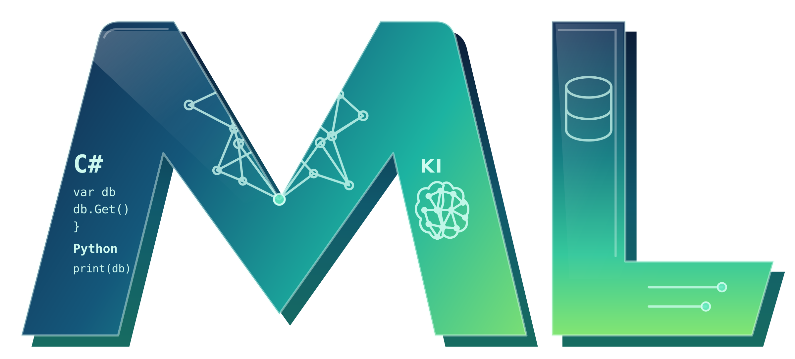

Ich verbinde über 25 Jahre Erfahrung in Softwareentwicklung und Datenbanken mit moderner KI. Statt alles neu zu entwickeln, integriere ich intelligente Lösungen in Ihre bestehenden Systeme und Geschäftsprozesse.

— Meine Leistungen
Dokumente lesen, Daten verarbeiten, Abläufe automatisieren – eingebunden in das, was bei Ihnen bereits funktioniert.
Rechnungen, Lieferscheine, Formulare, Protokolle – KI liest, prüft auf Vollständigkeit und Konsistenz, extrahiert relevante Werte und gibt strukturierte Daten zurück. Das Ergebnis kann sofort weiterverarbeitet werden: direkt übergeben an vorhandene Systeme, Datenbanken oder Folgeabläufe.
InvoiceCheck Professional ansehen →Automatisch verarbeitete Dokumente sind der Anfang. Ergebnisse lösen Aktionen aus, Daten wandern an die richtigen Stellen, Meldungen gehen an die richtigen Personen. Ich entwickle Abläufe, die auf den Ergebnissen aufbauen und eigenständige Routinen ohne manuellen Eingriff ausführen.
Vorhandene Anwendungen sollen erhalten bleiben. Ich entwickle in C#/.NET und integriere KI-Funktionen direkt in bestehende Systeme – als eingebundene Komponente, als interne Schnittstelle oder als eigenständiger Dienst. Die Datenquelle spielt dabei keine Rolle: SQL Server, PostgreSQL, MySQL, Excel, CSV oder XML – KI arbeitet auf dem, was bei Ihnen vorhanden ist, nicht auf importierten Kopien.
KI-Ergebnisse sind nur so zuverlässig wie die Daten, auf denen sie beruhen. Als eigenständige Leistung oder als erster Schritt prüfe und bereinige ich Datenbankstrukturen, korrigiere fehlerhafte Datenbestände und sorge für eine Grundlage, auf der Automatisierung tatsächlich funktioniert.
— LEGACY CHECK
Delphi-, Access- oder VBA-Anwendungen sind oft geschäftskritisch – auch wenn das Wissen über ihre Struktur mit der Zeit verloren geht. Ich analysiere den vorhandenen Code und die Abhängigkeiten und liefere eine verständliche Entscheidungsgrundlage: weiterbetreiben, gezielt verbessern oder schrittweise modernisieren.
— Praxisprojekte
Vier konkrete Anwendungsfelder aus der Praxis: Dokumentverarbeitung, Datenqualität, Fehleranalyse und Dokumentenprozesse. Entdecken Sie die Ansätze über die Detailfenster.
Rechnungs- und Geschäftsdaten liegen als PDF vor. Text wird ausgelesen, bei Scans kann OCR ergänzen. Erfasste Felder werden strukturiert geprüft und zur Übergabe an Excel oder SQL Server vorbereitet.
Dubletten, fehlende Angaben und unplausible Werte in Excel-, CSV- oder SQL-Daten mit nachvollziehbaren Regeln erkennen – bevor Import, Migration oder Reporting beginnen.
Logmeldungen und wiederkehrende Fehlerbilder auswerten, zeitliche Zusammenhänge sichtbar machen und nächste Untersuchungsschritte priorisieren.
Ablage, Metadaten, Suchbarkeit, Berechtigungen und Medienbrüche bewerten – mit konkreten Verbesserungsansätzen für vorhandene Dokumentenprozesse.
Berufliche Erfahrung
Öffentlicher IT-Dienstleister
Langjährige Entwicklung und Betreuung von Fachanwendungen und SQL-Server-Umgebungen. Aufgaben: C#/.NET-Entwicklung, Schnittstellen, Reporting, Datenmigration. Seit November 2024 zusätzlich Datenbankadministration: Versionsupdates, Backup/Restore, Berechtigungen, Fehleranalyse.
Pharma & industrielle Track-&-Trace-Systeme
Softwareentwicklung für Seriennummernverfolgung und Compliance in der Pharma- und Tabakindustrie. C#, ASP.NET, Delphi, SQL Server; Geräteschnittstellen, GAMP-Dokumentation, Inbetriebnahmen im In- und Ausland.
Weitere Stationen – ERP, Automatisierung, Webentwicklung
Stationen bei DATEV, Funkwerk plettac electronic, Siemens und weiteren Unternehmen. Themen: ERP-/CRM-Systeme, industrielle Automatisierung, Webentwicklung, WPF/WCF, C++, Delphi, SQL Server und PostgreSQL.
— Über mich
Ich bin Manfred Linner, Diplom-Informatiker (FH), und entwickle seit über 25 Jahren individuelle Unternehmenssoftware. Meine Schwerpunkte sind C#/.NET, Delphi, SQL Server und die Weiterentwicklung bestehender Anwendungen.
Heute verbinde ich dieses technische Fundament mit künstlicher Intelligenz und Automatisierung. Mein Ziel sind keine KI-Spielereien, sondern zuverlässige Lösungen, die Unternehmen im Alltag tatsächlich entlasten.
Sie haben ein konkretes Projekt oder eine offene Frage? Ich freue mich auf den Austausch.
Nachricht schreiben →— Lassen Sie uns sprechen
Beschreiben Sie kurz Ihre Aufgabe – ich melde mich, um den konkreten Bedarf und die nächsten Schritte zu besprechen.
Mein Projekt besprechen ↗Erstgespräch · kostenfrei · unverbindlich